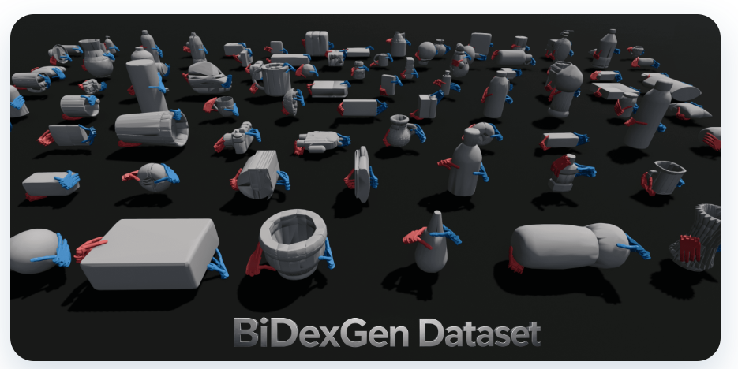
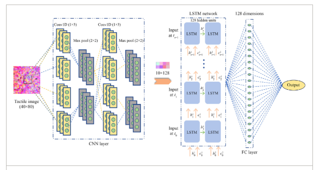
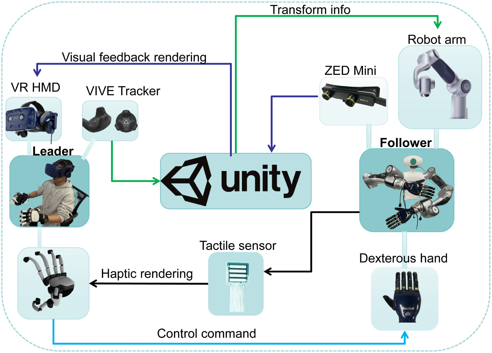
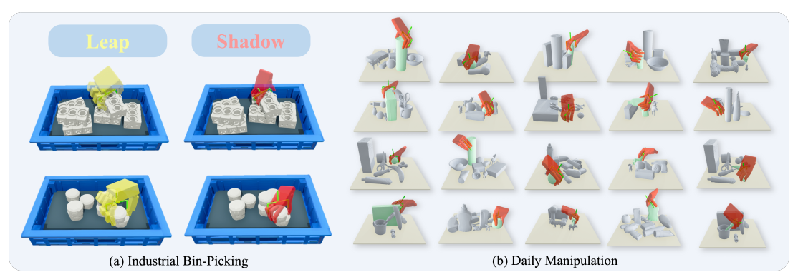
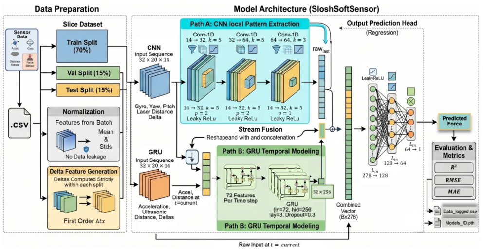

香港中文大学
机器人工程 · 理学硕士
2025.09–2026.11 （预计）
我是许浩良，主要关注机器人学习，对人工智能、计算机视觉与具身智能感兴趣。过去的研究与实践涉及灵巧操作、机器人强化学习和视觉语言动作模型，希望探索机器人如何利用感知与交互经验，学习更灵活的动作并适应新的任务。
Artificial IntelligenceComputer VisionEmbodied AIRobotics
机器人工程 · 理学硕士
2025.09–2026.11 （预计）
物联网工程 · 工学学士
2021.09–2025.06

IEEE Robotics and Automation Letters, 11(11): 12496–12503, 2026.
Paper ↗ 项目介绍
IET Cyber-Systems and Robotics, 7: e70036, 2025.
Paper ↗
IET Cyber-Systems and Robotics, 7: e70033, 2025.
Paper ↗
投稿至：IEEE Transactions on Automation Science and Engineering (TASE)
项目介绍
投稿至：Expert Systems with Applications (ESWA)
我探索如何让灵巧手在保持抓握的同时，通过手指协调运动连续旋转物体。从 Isaac Lab 中的策略训练到 Apex 灵巧手实机部署，这里展示了仿真以及水平、竖直两种实机旋转演示。
项目介绍我用 Meta Quest 将手部动作映射到机械臂与灵巧手，并结合视觉反馈实现共享控制。同时开展 π0.5 与 GR00T 等 VLA 模型实践，结合策略后训练与高层任务规划，让双臂机器人完成桌面整理、打包等操作。
项目介绍指尖操作 · 仿真
在 Sharpa Wave Hand 上结合 TacMap 触觉仿真，采用教师—学生强化学习框架，让策略根据指尖触觉与本体感知历史控制小球连续旋转，并在 Isaac Sim 中完成验证。
项目介绍堆叠抓取 · 实机
完成 OpenDuck 双足机器人的步态学习与实机迁移，并开发 B2 四足机器人与 Z1 六轴机械臂的移动操作仿真系统，集成 PPO 全身控制、语义分割与视觉伺服、可达性导航和抓取规划。
项目介绍2026.05–至今
机器人算法实习生
2025.07–2025.09
具身算法实习生
2025.03–2025.06
算法实习生
欢迎交流研究想法与项目经验。
xhaol123@163.com ↗